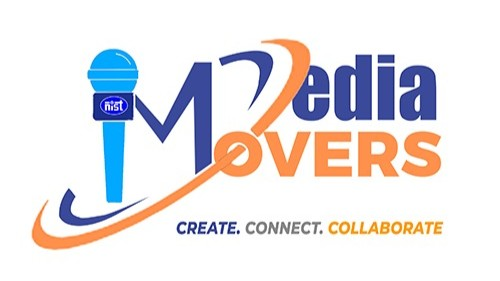

The MediaMovers
NIST PR CELL
[About]
[What We Do]
[Our Work]
[Behind The Scenes]
[Stories]
[Community]
@the.mediamovers
Join Collective
NAVIGATION
close
[About]
[What We Do]
[Our Work]
[Behind The Scenes]
[Stories]
[Community]
Join Collective
@the.mediamovers